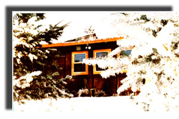
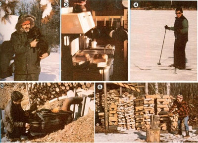

"Blow, blow, thou winter wind. Thou art not so unkind as man's ingratitude." (Shakespeare)
Several years ago I became disenchanted with the harried pace of city living. So-since the children were grown and my wife Neva and I had accumulated a retirement nest egg-we made a permanent move to our vacation cabin in north central Minnesota. Here, we've learned to survive in-and love-all the seasons . . . and particularly winter.
It seems that more and more folks have-in recent years-chosen to uproot themselves from the North and migrate south . . . and many Yankees who do stay in the cold country spend the entire winter complaining about the weather. But Neva and I refuse to spend four or five months of each of our precious years grumbling about how miserable we are. We vowed we'd either learn to love the long, cold, snowy season (and not badmouth it), or else we too would pack our bags and leave the northland.
Well, as you've probably guessed, we've decided to stay put. Having spent the past two winters in our new home, we believe that the cold months represent the most beautiful time of the year. Neva and I could never relocate to an area where the temperature was nearly the same all year round . . . we're sure we'd find the monotony all but unbearable.
FIRST, DECIDE TO ENJOY YOURSELF
Our area of north central Minnesota is known for some of the most severe winter weather in the United States. We're almost certain to see the mercury drop to the -30°F range each year . . . and sometimes it'll plummet to -40°F!
Such severe temperatures frighten some folks into either hibernation or migration . . . yet Neva and I anticipate our winters eagerly. We've found that the correct mental attitude is all that's necessary to bring out the best in the season. Once you make up your mind to take advantage of all that cold weather can offer, you'll be delighted with the first snowfall . . . and every one thereafter.
BE PREPARED
By early September we're already busily preparing for the gorgeous and serene winter months to come. Our summer equipment must be stored away, and our winter gear has to be brought out of storage, serviced, and made ready for the season ahead.
Getting set for winter involves more than just swapping equipment, of course. We must-for instance-make sure that we have an adequate fuel supply to last the entire season. It's necessary to guarantee a dependable water source, too . . . and to stock several months' supply of food. Our shelter has to be made comfortable, and our supply of proper clothing inventoried. Once such needs are taken care of, we can relax with a feeling of confidence and welcome Old Man Winter!
Our home is set back one mile from the nearest maintained road, and that thoroughfare is plowed only after snowfalls exceeding six inches. So during the early winter we clear, our own drive with a homemade snowplow similar to the one presented in MOTHER NO. 66. [EDITOR'S NOTE: That "plow" is little more than sonic ,scrap 2 X 8's nailed together and weighted down with any available hoary object. When pulled behind a tractor or four-wheel-drive vehicle the triangular device effectively packs down the snore . . . making the road or drive-passable once again.
After a certain point each year, however, we're faced with either hiring heavy equipment to open our drive or making do without our car for the balance of the winter. When that happens, we usually rely on snowmobiles, skis, or snowshoes to visit civilization.
Until the first part of January much of our free time is spent stocking green firewood for the following year. Early winter is also when we go hunting for our winter meat, and trapping for furs. It's the perfect season to net some whitefish or tullibees, too, and guarantee ourselves a few delicious smoked fish dinners. The smoking process is easy, but it does take a lot of time . . . so we save the chore for a day when our energy and ambition are at low ebb. And, since we usually have some jerky or venison ribs to smoke at the same time, the job turns out to be one of the treats of winter we look forward to all year long.
STAY BUSY OUTDOORS . . .
There are very fe w days-even in the depths of the cold season-that we aren't outside more than we're in. (Of course, midwinter daylight lasts only from 8 a.m. to about 4:30 p.m.) For one thing, our homestead borders a lake, and we're the only year-round residents enjoying the many winter activities related to waterfront living. By mid-December, for example, the ice is thick enough for winter fishing. A mess of crappie or a pike freshly pulled from the cold water makes a special meal.
When the ice is safe-but before the snow reaches extreme depths-we keep an area of the lake cleared for skating. Neva and I often spend several hours a day getting plenty of fresh air and exercise on our "rink".
Several families in the area own and race sled dog teams, and we've often discussed pursuing this sport, too. But, for now, we're only spectators at the meets . . . and get our enjoyment by just watching the magnificent, highly disciplined animals.
Neva and I also do a great deal of cross-country skiing or snowshoeing. Once the ground is deeply blanketed, there are a few clear evenings before, during, and after a full moon that we especially enjoy spending outdoors. In this part of the country, a full moon reflecting on the snow makes the world at least as bright as it is on a cloudy day, and while sliding through the night-we can hear owls hooting and wolves howling, and often witness unfrightened deer feeding in the moonlight. Our "backyard" forest appears to be a different, mysterious world at such times . . . full of almost magical nocturnal creatures .
. . . OR INDOORS
After several hours spent in the fresh cold air, we head inside, for hot food and a comfortable chair in front of a crackling fire . . . and at such moments, we're able to truly relax, often staying awake an extra hour or so just to prolong the feeling of contentment that seems to glow in our bodies.
There are times, of course, when we choose to stay indoors all day. If it's -40°F outside, and the wind is howling around the corners of the house, the temptation to throw another log on the fire, turn on some favorite music, and simply loll about is often irresistible. With the help of a good book each-and maybe a bottle of homemade wine-we use such rare days to renew our gratitude for the warmth and companionship we share.
At regular intervals, when we find it necessary to replenish our supply of baked goods, we fire up the ancient woodburning cookstove and bake bread. Sometimes Neva prepares a crock of baked beans or a blueberry pie as well . . . and the air is filled with wonderful aromas.
CHILLY IS ONLY A STATE OF MIND
Folks who've never lived in the north country shiver at the mere thought of being outdoors when the temperature is -20°F. Actually, though, only three things are necessary to achieve comfort in subzero weather. The most important of these is-as I've said-a positive mental attitude. Second, you must own and wear the proper clothing. And finally, make sure you get a reasonable amount of physical exercise. My wife and I stay outside for six to eight hours at a time in -20°F temperature and always manage to stay comfortably warm. Remember her, though, that many people have a tendency to overdress. When you're involved in strenuous outdoor activity. it's best to peel off a layer or two . . . if you get chilly, you can always put, on another pair of socks or an extra sweater.
Winter has become a very special time for us. It seems as if the fresh snow cover bathes and dresses the natural world. We've decided to accept Mother Nature's time to rest and rejuvenate, and in return she has graced us with peace, quiet, solotude, and true beauty. We couldn't be more pleased with our choice.
|
 |
 |
|